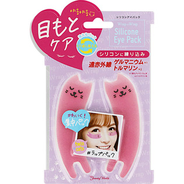

返回列表
产品名称：ラップラップ シリコンアイパック

トレンディハウス ラップラップ シリコンアイパック ＿
メーカー トレンディハウス
JANコード 4537715961136
商品の特徴
シリコンにゲルマニウムとトルマリンを練り込みました。
気になるパーツを遠赤外線で集中パックできます。
洗って繰り返し使えます。
成分・分量
【素材】
シリコン
用法及び用量
【使用方法】
１．洗顔し、清潔な状態にして、化粧水・美容液等で、お肌を整えます。
２．気になる部分（目元・唇）にしっかり貼ります。１０分を目安にパックしてください。